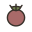
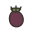
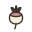
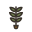
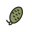
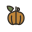
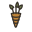
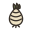
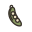
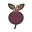

планировщик
Севооборот на грядках
Отметьте культуры, которые выращиваете — планировщик разложит их по грядкам и годам с соблюдением севооборота. Любую ячейку потом можно поправить вручную.
2026
2027
2028
2029
🥬
🥕
🌰
🍅
родню — на прежнее место не раньше срока
На одной грядке одно ботаническое семейство не должно повторяться 3–4 года: у родни общие вредители и болезни, они копятся в почве. Порядок по «прожорливости»: сильные едоки (капуста, тыквенные, паслёновые) → корнеплоды и лук → бобовые и зелень , которые почву восстанавливают. Пустой год или сидераты — законный способ дать грядке отдохнуть.
1. Ваш огородСколько грядок и на сколько частей делите каждую, если на грядке уживается несколько культур.
2. Мои культурыОтметьте всё, что планируете сажать. Из этого набора строится порядок ротации. Что не отмечено — планировщик сам не поставит (но вы сможете выбрать вручную в любой ячейке).

Томат Картофель Перец 
Баклажан Капуста белокочанная 
Редис 
Руккола Репа Редька 
Огурец 
Кабачок Тыква 
Морковь Укроп Петрушка Кинза (кориандр) 
Лук репчатый Чеснок 
Горох Фасоль 
Свёкла Шпинат Салат листовой
Кукуруза сахарная
Базилик
Построить севооборот
Дозаполнить пустые
выбрано: 8
3. План по годамКолонка «2026 · сейчас» — жёлтая рамка. Кликните любую ячейку, чтобы поменять культуру, поставить «— пусто / пар —» или «сидераты». Нарушения севооборота подсвечиваются сразу.
Набор культур изменился — нажмите «Построить севооборот», чтобы пересобрать план.
2026сейчас
2027год 2
2028год 3
2029год 4
Грядка 1
— пусто / пар — Сидераты Горох Капуста белокочанная Картофель Лук репчатый Морковь Огурец Свёкла Томат Томат Картофель Перец Баклажан Капуста белокочанная Редис Руккола Репа Редька Огурец Кабачок Тыква Морковь Укроп Петрушка Кинза (кориандр) Лук репчатый Чеснок Горох Фасоль Свёкла Шпинат Салат листовой Кукуруза сахарная Базилик Капустные
— пусто / пар — Сидераты Горох Капуста белокочанная Картофель Лук репчатый Морковь Огурец Свёкла Томат Томат Картофель Перец Баклажан Капуста белокочанная Редис Руккола Репа Редька Огурец Кабачок Тыква Морковь Укроп Петрушка Кинза (кориандр) Лук репчатый Чеснок Горох Фасоль Свёкла Шпинат Салат листовой Кукуруза сахарная Базилик Луковые
— пусто / пар — Сидераты Горох Капуста белокочанная Картофель Лук репчатый Морковь Огурец Свёкла Томат Томат Картофель Перец Баклажан Капуста белокочанная Редис Руккола Репа Редька Огурец Кабачок Тыква Морковь Укроп Петрушка Кинза (кориандр) Лук репчатый Чеснок Горох Фасоль Свёкла Шпинат Салат листовой Кукуруза сахарная Базилик Тыквенные
— пусто / пар — Сидераты Горох Капуста белокочанная Картофель Лук репчатый Морковь Огурец Свёкла Томат Томат Картофель Перец Баклажан Капуста белокочанная Редис Руккола Репа Редька Огурец Кабачок Тыква Морковь Укроп Петрушка Кинза (кориандр) Лук репчатый Чеснок Горох Фасоль Свёкла Шпинат Салат листовой Кукуруза сахарная Базилик Амарантовые
севооборот выдержан
Грядка 2
— пусто / пар — Сидераты Горох Капуста белокочанная Картофель Лук репчатый Морковь Огурец Свёкла Томат Томат Картофель Перец Баклажан Капуста белокочанная Редис Руккола Репа Редька Огурец Кабачок Тыква Морковь Укроп Петрушка Кинза (кориандр) Лук репчатый Чеснок Горох Фасоль Свёкла Шпинат Салат листовой Кукуруза сахарная Базилик Паслёновые
— пусто / пар — Сидераты Горох Капуста белокочанная Картофель Лук репчатый Морковь Огурец Свёкла Томат Томат Картофель Перец Баклажан Капуста белокочанная Редис Руккола Репа Редька Огурец Кабачок Тыква Морковь Укроп Петрушка Кинза (кориандр) Лук репчатый Чеснок Горох Фасоль Свёкла Шпинат Салат листовой Кукуруза сахарная Базилик Сельдерейные
— пусто / пар — Сидераты Горох Капуста белокочанная Картофель Лук репчатый Морковь Огурец Свёкла Томат Томат Картофель Перец Баклажан Капуста белокочанная Редис Руккола Репа Редька Огурец Кабачок Тыква Морковь Укроп Петрушка Кинза (кориандр) Лук репчатый Чеснок Горох Фасоль Свёкла Шпинат Салат листовой Кукуруза сахарная Базилик Амарантовые
— пусто / пар — Сидераты Горох Капуста белокочанная Картофель Лук репчатый Морковь Огурец Свёкла Томат Томат Картофель Перец Баклажан Капуста белокочанная Редис Руккола Репа Редька Огурец Кабачок Тыква Морковь Укроп Петрушка Кинза (кориандр) Лук репчатый Чеснок Горох Фасоль Свёкла Шпинат Салат листовой Кукуруза сахарная Базилик Луковые
севооборот выдержан
Грядка 3
— пусто / пар — Сидераты Горох Капуста белокочанная Картофель Лук репчатый Морковь Огурец Свёкла Томат Томат Картофель Перец Баклажан Капуста белокочанная Редис Руккола Репа Редька Огурец Кабачок Тыква Морковь Укроп Петрушка Кинза (кориандр) Лук репчатый Чеснок Горох Фасоль Свёкла Шпинат Салат листовой Кукуруза сахарная Базилик Тыквенные
— пусто / пар — Сидераты Горох Капуста белокочанная Картофель Лук репчатый Морковь Огурец Свёкла Томат Томат Картофель Перец Баклажан Капуста белокочанная Редис Руккола Репа Редька Огурец Кабачок Тыква Морковь Укроп Петрушка Кинза (кориандр) Лук репчатый Чеснок Горох Фасоль Свёкла Шпинат Салат листовой Кукуруза сахарная Базилик Паслёновые
— пусто / пар — Сидераты Горох Капуста белокочанная Картофель Лук репчатый Морковь Огурец Свёкла Томат Томат Картофель Перец Баклажан Капуста белокочанная Редис Руккола Репа Редька Огурец Кабачок Тыква Морковь Укроп Петрушка Кинза (кориандр) Лук репчатый Чеснок Горох Фасоль Свёкла Шпинат Салат листовой Кукуруза сахарная Базилик Луковые
— пусто / пар — Сидераты Горох Капуста белокочанная Картофель Лук репчатый Морковь Огурец Свёкла Томат Томат Картофель Перец Баклажан Капуста белокочанная Редис Руккола Репа Редька Огурец Кабачок Тыква Морковь Укроп Петрушка Кинза (кориандр) Лук репчатый Чеснок Горох Фасоль Свёкла Шпинат Салат листовой Кукуруза сахарная Базилик Сельдерейные
севооборот выдержан
Грядка 4
— пусто / пар — Сидераты Горох Капуста белокочанная Картофель Лук репчатый Морковь Огурец Свёкла Томат Томат Картофель Перец Баклажан Капуста белокочанная Редис Руккола Репа Редька Огурец Кабачок Тыква Морковь Укроп Петрушка Кинза (кориандр) Лук репчатый Чеснок Горох Фасоль Свёкла Шпинат Салат листовой Кукуруза сахарная Базилик Амарантовые
— пусто / пар — Сидераты Горох Капуста белокочанная Картофель Лук репчатый Морковь Огурец Свёкла Томат Томат Картофель Перец Баклажан Капуста белокочанная Редис Руккола Репа Редька Огурец Кабачок Тыква Морковь Укроп Петрушка Кинза (кориандр) Лук репчатый Чеснок Горох Фасоль Свёкла Шпинат Салат листовой Кукуруза сахарная Базилик Бобовые
— пусто / пар — Сидераты Горох Капуста белокочанная Картофель Лук репчатый Морковь Огурец Свёкла Томат Томат Картофель Перец Баклажан Капуста белокочанная Редис Руккола Репа Редька Огурец Кабачок Тыква Морковь Укроп Петрушка Кинза (кориандр) Лук репчатый Чеснок Горох Фасоль Свёкла Шпинат Салат листовой Кукуруза сахарная Базилик Паслёновые
— пусто / пар — Сидераты Горох Капуста белокочанная Картофель Лук репчатый Морковь Огурец Свёкла Томат Томат Картофель Перец Баклажан Капуста белокочанная Редис Руккола Репа Редька Огурец Кабачок Тыква Морковь Укроп Петрушка Кинза (кориандр) Лук репчатый Чеснок Горох Фасоль Свёкла Шпинат Салат листовой Кукуруза сахарная Базилик Сельдерейные
севооборот выдержан
Из тетради Гуся
что где росло — всё тут
«На тот же клин ту же родню верну не раньше чем через четыре года, — Гусь припечатывает лапой тетрадь. — Вернёшь раньше — считай, своих же вредителей и подкормил. А горох с фасолью суй хоть каждый год: они землю не грабят, а кормят».
Очистить будущие годы
Распечатать
Поделиться
Сбросить
Ссылка со всем планом — открывается сразу с этой раскладкой.